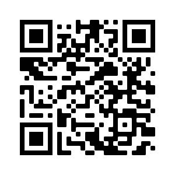

Portfólio
Como primeiro projeto, eu trouxe meu proprio portfólio, feito a partir de HTML e CSS no momento, trazendo um tema Dark Mode e algumas animaçôes. O portfólio conta com informaçoes sobre mim, contatos e meus projetos, tanto como meu perfil do Github e Linkedln.
To do List

Nesse projeto, eu fiz uma Lista de Tarefas (To do List) onde você pode adicionar e deletar tarefas, juntamente com a opção de auto-complete para tarefas concluidas.
Alem disso, os dados que você colocou ficam no site, mesmo atualizando o browser. Esse projeto consiste em uma combinação de HTML, CSS e JavaScript, onde uso temas Dark Mode em todos meus projetos para a coerencia entre eles.
Você pode acessar o site clicando aqui ou passando o mouse em cima do card acima e escaneando nosso qrcode.
Tela de Login
Nesse projeto, eu fiz uma tela de login onde temos HTML e CSS primeiramente, com animações presentes. Como dito acima, ele apresenta um tema Dark Mode, a fim de ter uma coerencia entre os projetos, usando as mesmas paletas de cores.
Você pode acessar o site clicando aqui ou passando o mouse em cima do card acima e escaneando nosso qrcode.